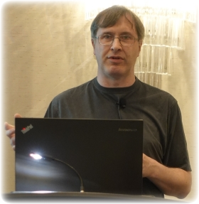

The netfslib helper library
A new helper library for network filesystems, called netfslib, was the subject of a filesystem session at the 2022 Linux Storage, Filesystem, Memory-management and BPF Summit (LSFMM). David Howells developed netfslib, which was merged for 5.13 a year ago, and led the session. Some filesystems, like AFS and Ceph, are already using some of the services that netfslib provides, while others are starting to look into it.
Howells launched right into netfslib and some of its features without much in the way of a high-level introduction to the library. His topic proposal email does some of that, however:
I've been working on a library (in fs/netfs/) to provide network filesystem support services, with help particularly from Jeff Layton. The idea is to move the common features of the VM interface, including request splitting, operation retrying, local caching, content encryption, bounce buffering and compression into one place so that various filesystems can share it.This also intersects with the folios topic as one of the reasons for this now is to hide as much of the existence of folios/pages from the filesystem, instead giving it persistent iov iterators to describe the buffers available to it.
Goals
The basic goal, he said in the session, is to get the virtual-memory (VM) handling out of the network filesystems and into a common library. The library sits between the memory-management subsystem and the filesystem and handles all of the address-space operations, except, perhaps, for truncation. All of the folio handling will go into the library as well. Local caching is done there too, which allows the cache to use multi-page folios more easily.

Netfslib will allow for content encryption, which is distinct from transport encryption; a client can access the content of its files locally, without the server having any way to do so because the content is encrypted. This means that the local cache should only have encrypted file data; the client will decrypt it on read operations and encrypt it on write operations. Keeping the decrypted data out of the cache helps ensure that losing your laptop does not mean someone can access the contents of those files, he said.
It is easier to do all of that handling in one place and give all network filesystems access to the same services. To get the content encryption part working, he had to add buffering capabilities to netfslib, so it can handle read, modify, and write operations: it can issue a read to the file server, allow modifications to the data, then write it back. The write will not necessarily be using data in the page cache, he said; the library can do large batch of writes directly to the server from memory, and then remove the data from memory.
The library allows network filesystems to get rid of all knowledge of pages or folios in their code, he said. The library uses hooks for two operations: asynchronous read and write. Those hooks are passed iov_iter structures, which point to data stored using a variety of mechanisms, "maybe in a bvec, maybe in an XArray, maybe in the page cache", and the filesystem does not need to know which it is. The library can thus handle direct I/O, encrypted direct I/O, and buffered I/O (possibly with encryption); all of that is working, he said.
There are two functions that network filesystems have to provide if they want to support content encryption: functions to encrypt and decrypt blocks. The idea is that filesystems that use fscrypt, as Ceph is looking at doing, can simply point the hooks at fscrypt. The fscrypt information will simply be stored in the inode, he said.
Beyond that, netfslib also uses a hook for readahead that can handle filesystems with complicated requirements. He gave the example of Ceph, which has 2MB blocks for its files and those blocks may be scattered around on different servers. The readahead hook can queue up multiple blocks, from multiple servers, then issue all of those reads at once. Or they can be dispatched in order, which is a feature the CIFS filesystem needs, he said; the library effectively provides some basic queueing services.
Other support?
Steve French asked about compression support; many of the network filesystems can do compression over the wire to reduce the bandwidth required. Howells said that he is working on making that available as well. It is a bit tricky to do, he said, because the compression block size is usually bigger than the page or folio size. Since there are different compression schemes used by the filesystems, there will need to be hooks for compressing and uncompressing.
Amir Goldstein asked about support for directory caching. Howells said that he had some patches to support AFS directory caching, but AFS directories are just blobs that get passed back and forth. He can look at adding directory information caching, where the directory entries are read from the server and stored in some standard format locally.
Josef Bacik asked about the eventual goal: is it to replace a bunch of code in NFS, Ceph, CIFS, and others? Howells agreed that was the goal; the Plan 9 filesystem (9P) is another target and he has been asked about FUSE. Goldstein said that FUSE would make sense and should be converted.
Bacik continued by wondering about the status of this work. Howells said that the read helpers are all working and that AFS, Ceph, and 9P are using them; he has patches for CIFS, which were tested and did not seem to have any performance impact. He is working on the write helpers, and they are mostly working, other than truncation support, which is up next. The write helpers might get added to the mainline in the next merge window, though that may be a bit tight timing-wise. Bacik asked if the overall goal was simplification; Howells said that it was, and he has already been able to remove around 8000 lines of code.
Chuck Lever asked about support for direct placement of data; it is important for CIFS, NFS, and 9P, so he wanted to know what Howells planned to do for RDMA transports. Howells said that he had not really looked at it much and did not have hardware to test with, though he thought he could probably come up with some. Lever said that hardware was not needed, since there are two software RDMA drivers in the kernel that work with standard Ethernet cards. Howells said that he would look into it and Lever said that he was volunteering to help; "it's not as bad as you think". With a chuckle, Howells said: "I've heard that before."
On the chat, Layton said that he did not see any reason that netfslib could not add that RDMA support. Howells said that when doing buffered reads and writes using the page cache, netfslib hands off an iov_iter with the page cache pages in it to the network filesystem. Similarly, direct I/O reads and writes simply get an iov_iter. Presumably, the network filesystem will do whatever is needed to do RDMA to or from those pages, he said. Layton agreed with that.
Bacik said that he thought that the netfslib work was a good start, though there were some things, like RDMA and FUSE that would need to be looked at before too long. Converting network filesystems to use netfslib is probably a more pressing concern. Howells (and the rest of the room) seemed to agree with that.
| Index entries for this article | |
|---|---|
| Kernel | Filesystems/Network |
| Kernel | Network filesystems |
| Conference | Storage, Filesystem, Memory-Management and BPF Summit/2022 |